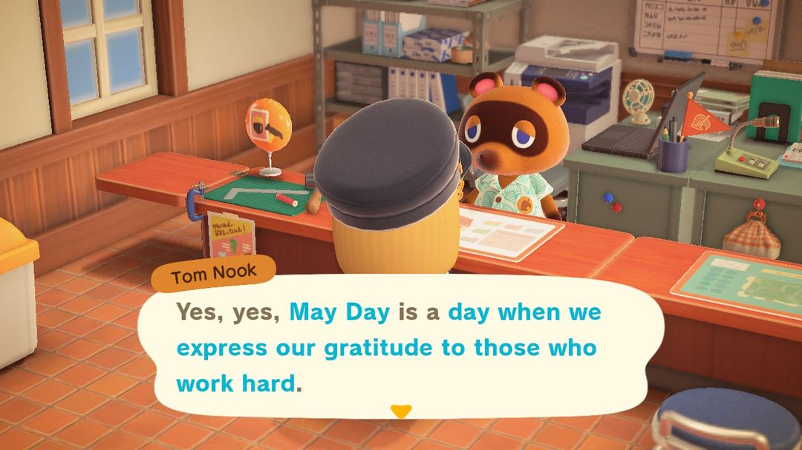
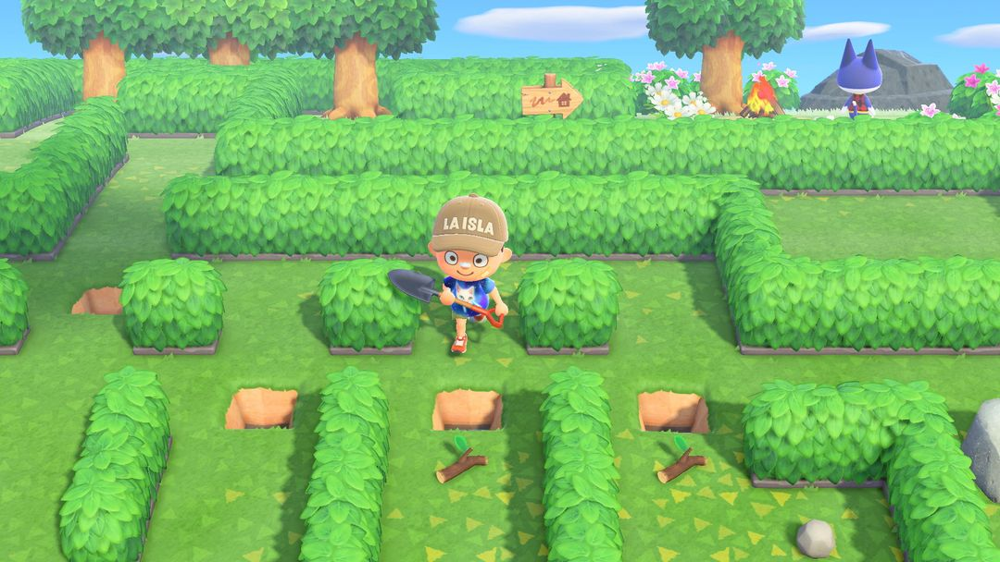
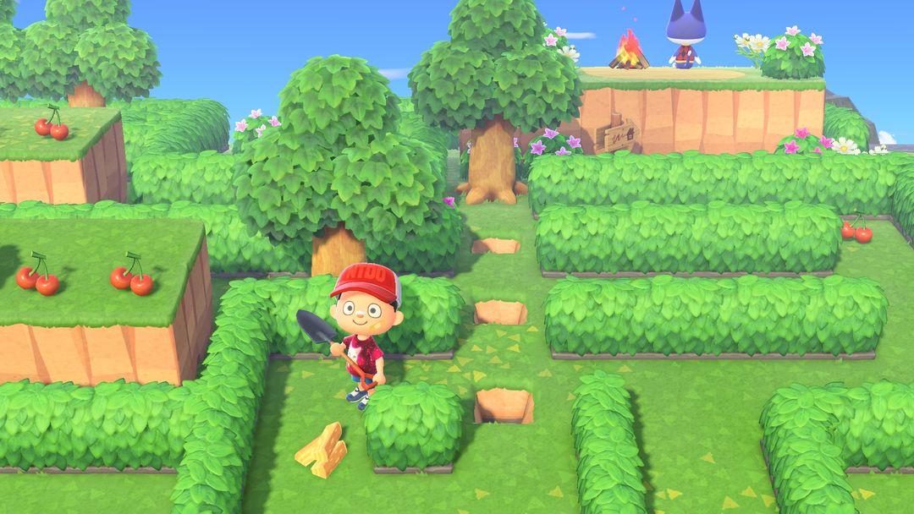
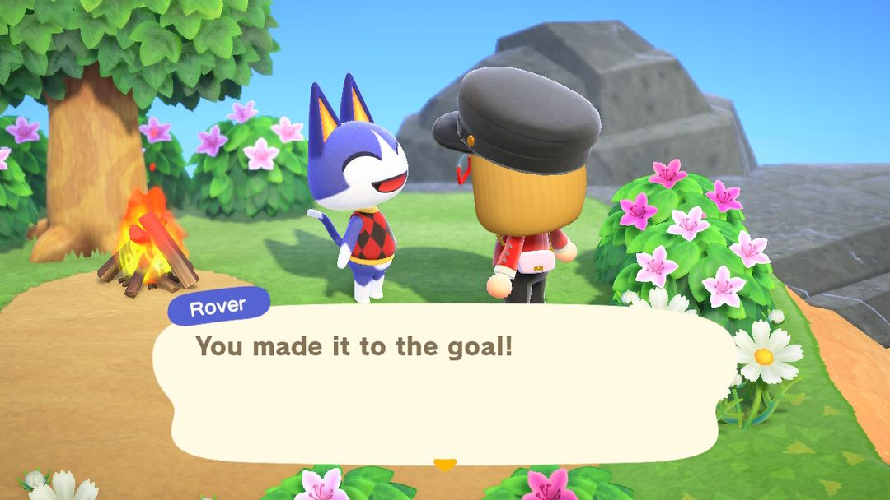

メーデーの迷路ツアー：1枚のチケットで、みしらぬネコのもとへ
毎年4月29日〜5月7日。行けるのは1年に1回だけ
たぬきちいわく、メーデーはがんばって働く人に感謝する日。そこで島民みんなにツアーを用意してくれました。行き先はいけがきで囲まれた迷路の島で、ゴールで待っているのは青紫色のネコ、みしらぬネコです。
このツアーは毎年4月29日〜5月7日に開催され、北半球も南半球も同じ期間で、行けるのは1年に1回だけです。島に着いたときポケットは空っぽで、道を切り開く手段は迷路で拾うスコップ、フルーツ、素材だけ。特にフルーツは大切に使わないと、途中で1本の木に道をふさがれて進めなくなります。ゴールにたどり着くと、1回目は「みしらぬネコのかばん」、2回目は「みしらぬネコのしゃしん」がもらえ、道中では最大9枚の「ベルひきかえけん」も拾えます。事前の準備は不要なので、時間のある日に行けばOKです。以下、出発→迷路→ごほうびの順に説明します。

期間中に案内所のたぬきちに話しかけると、メーデーのツアーを紹介してくれます（英語版の画面）（画像：Nookipedia）
01行ける期間
日付は固定で、毎年4月29日〜5月7日です。イースターに合わせて変わることもなく、北半球・南半球の区別もなく、毎年この期間です。
この9日間ならどの日に行ってもよく、初日に急ぐ必要はありません。ただ、一度クリアして帰ってくると、その年はもう行けません。急がなくていい日を選んで、ゆっくり回りましょう。
02まずたぬきち、次にモーリー
出発までに2か所を回ります。
1. まず案内所のたぬきちに話しかけると、チケットはもう予約してあると教えてくれます。
2. 次に飛行場のモーリーのところへ行き、カウンターで出発したいと伝えると飛行機に乗れます。
3. 迷路の島に着くとポケットは空っぽで、自分の道具は1つも持ち込めません。
逆に、迷路の島で拾ったものも持ち帰れません。家に持ち帰れるのは、みしらぬネコからのプレゼントとベルひきかえけんだけで、この2つはポストに届きます。
03迷路の進み方
迷路はいけがきで囲まれていて、道のところどころを木、岩、低木がふさいでいます。ふさいでいるものによって、どかし方が違います。
低木はいちばん簡単で、スコップでそのまま掘り起こせます。
木と岩は、まずフルーツを1個食べてパワーをつけてから、スコップで木を根っこごと掘り起こすか、岩を壊します。フルーツ1個で使えるのは1回だけ。木を1本掘るか岩を1つ壊すと、パワーはなくなります。
こわれかけのオノは木を1本切ると壊れてしまうので、いちばん大事な1本のために取っておきましょう。
途中に「そぼくなDIYさぎょうだい」が置いてあります。迷路で拾ったDIYレシピを先に覚えて、材料がそろったらここで道具を作りましょう。
迷路のレイアウトは2種類あり、年によって変わることがあります。
| レイアウト | 特徴 |
| 平地タイプ | 島全体が平らで、まっすぐにしか跳び越えられない小さな水たまりがある。材料を集めてオノを1本作る |
| がけタイプ | 上下2段の地形。もくざい・かたいもくざい・やわらかいもくざいを集めてはしごを作り、がけを登る |

平地タイプ：木を掘り起こしながら道を開いていきます（画像：任天堂、Nookipedia より）

がけタイプ：はしごを作って登ります。みしらぬネコは右上（画像：任天堂、Nookipedia より）
注意道をまちがえた、フルーツが足りなくなった、どこかにはまって出られなくなった、というときは、スマホの「緊急脱出サービス」を使いましょう。100マイルでスタート地点に戻され、迷路全体がリセットされます。島で拾ったものは消えますが、すでにもらったみしらぬネコのプレゼントには影響ありません。
04もらえるもの
ゴールに着くと、みしらぬネコがプレゼントをくれます。何をくれるかは、何回目のゴールかで決まります。ほかに、迷路にはベルひきかえけんも落ちていて、一部は岩の向こうに隠れているので少し手間がかかります。
| アイテム | 手に入れ方 |
| みしらぬネコのかばん | はじめてゴールしたとき |
| みしらぬネコのしゃしん | 2年目にもう一度ゴールしたとき |
| ベルひきかえけん | ゴール近くに4枚、島の端の3つの岩の向こうにさらに5枚 |
プレゼントもひきかえけんも、翌日ポストに届きます。島に戻った当日にポケットに入っていなくても、あわてなくて大丈夫です。ベルひきかえけんは1枚3,000ベルで売れるので、9枚全部集めると27,000ベルになります。
05出発前に知っておきたいこと
フルーツはむやみに食べない。島の端の5枚のひきかえけんは3つの岩にふさがれていて、フルーツを残しておかないと壊せません。木を掘る前に、その木を本当に掘る必要があるか考えましょう。
よく見てから動く。迷路は広くないので、まずひと回りして、どの木が本当に道をふさいでいるか、どの岩の向こうに何があるかを確かめてから、フルーツの使いどころを決めましょう。
DIYレシピは拾ったらすぐ覚える。はしごやオノのレシピは迷路の中に隠れていて、覚えないと作れません。拾ったらまず読んで覚えましょう。
帰ってきたらもう一度たぬきちへ。ほめてもらえて、その年のツアーは正式に終わりです。

ゴールでは、みしらぬネコがキャンプファイアのそばで待っています（英語版の画面）（画像：Nookipedia）
06アップデートでの変化
メーデーは2020年のVer.1.2.0で追加されました。当時の期間は5月1日〜7日で、レイアウトも平地タイプだけでした。2021年のVer.1.10.0で開始日が4月29日に早まり、がけタイプが登場し、みしらぬネコのしゃしんが追加され、プレゼントとひきかえけんも翌日届く形に変わりました。Ver.2.0からは2種類のレイアウトが年によって出るようになりました。Ver.3.0での変更はありません。
あつ森 サークル · App Store で「あつ森 サークル」を検索